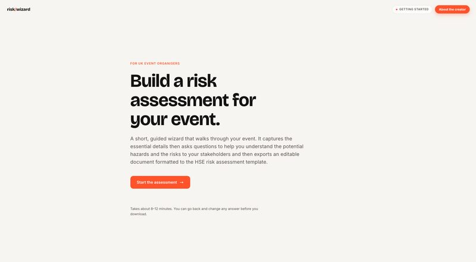
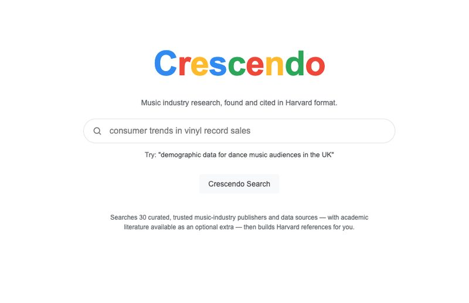
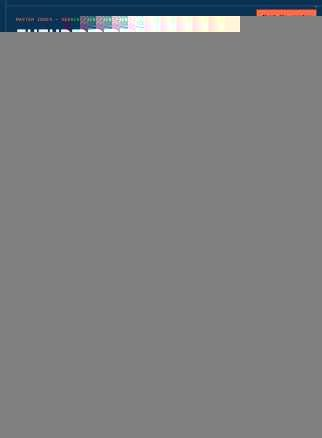
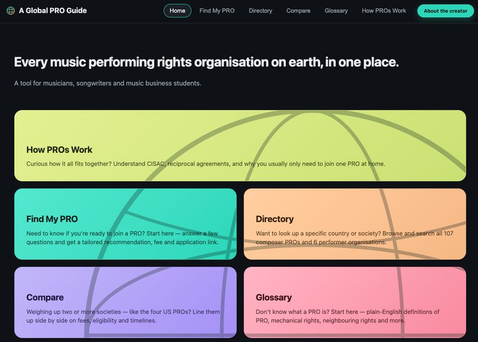
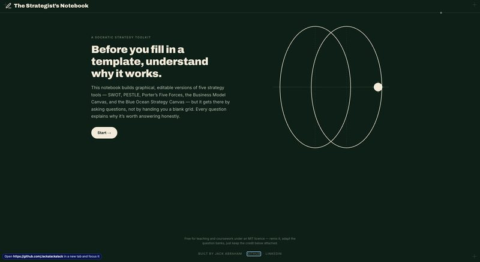
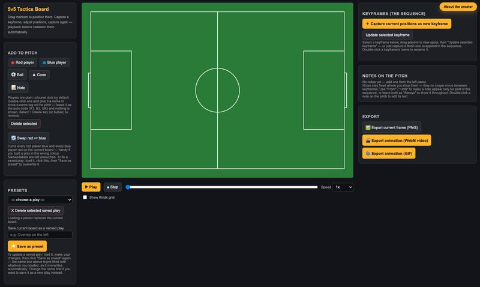

AI Tools
A suite of no-code tools built as teaching aids and for my own fun. Each one is free to use. I'll be adding more as I make them.

Risk Wizard
A guided wizard that walks through your event, captures the essential details, and exports an editable document formatted to the HSE risk assessment template.

Crescendo
Music industry research, found and cited in Harvard format. Searches 30 curated, trusted publishers and data sources.

Future Links
A shared, searchable stash of links for the course. Search by keyword or filter by tag.

A Global PRO Guide
Every music performing rights organisation on earth, in one place. Find your PRO, compare societies, and browse the directory.

The Strategist's Notebook
Before you fill in a template, understand why it works. Builds graphical, editable versions of five strategy tools — SWOT, PESTLE, Porter's Five Forces, Business Model Canvas, and Blue Ocean Strategy.

5v5 Tactics Board
Drag markers to position players, capture keyframes, adjust positions, and play back animated sequences. Export as PNG, WebM video, or GIF.